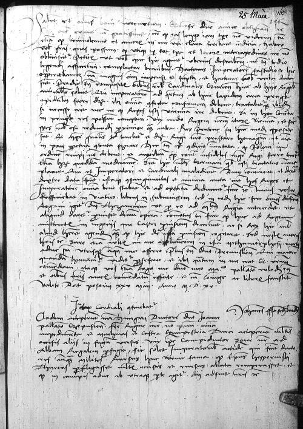
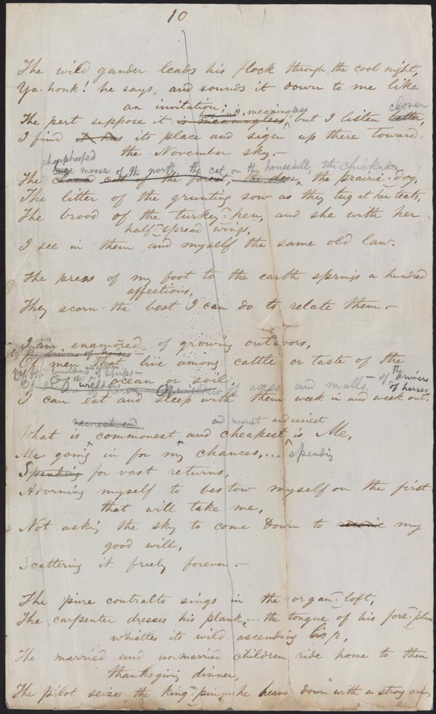
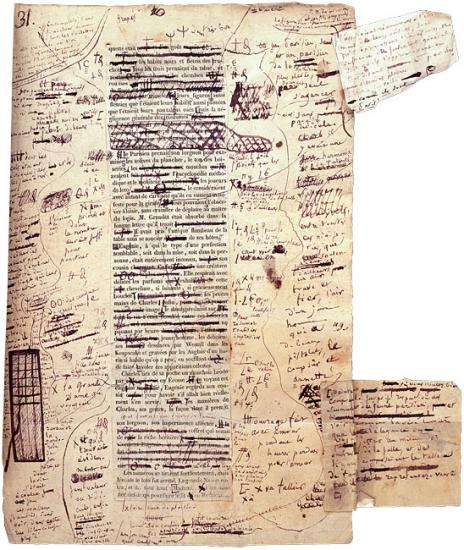
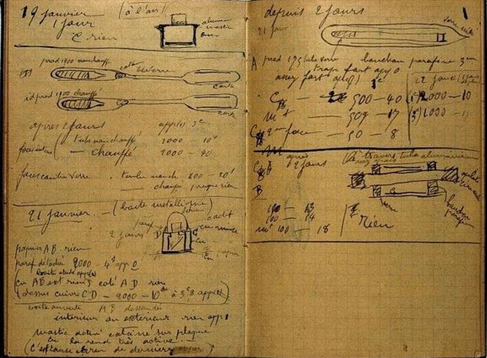
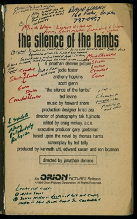

Introduction to digital scholarly editions
Magdalena Turska | @magdaturska
University of Oxford | DiXiT ITN
and
Katarzyna Jasińska-Zdun | @sopranissime
University of Warsaw | Faculty of "Artes Liberales"
Press SPACE to navigate
through slides.
At the heart of the edition: the text
“What is text? I am not so naïve as to imagine that question could ever be
finally settled. Asking such a question is like asking ‘How long is the coast of
England?’.”(J. McGann)
“Text is what you look at. And how you look at it.” (P. Sahle)
A lot of this talk is based on the work of Patrick Sahle, Elena Pierazzo,
Georg Vogeler, Franz Fisher, the IDE, DiXiT, and RIDE amongst others.
Text is not the only interest in an edition
- ‘verbal codes’: text,
marginalia, reading notes
- ‘non-verbal codes’: pencil
marks, dog ears, changes in medium, writing, etc.
Ioannes Dantiscus Correspondence

Walt Whitman, page
of Leaves of Grass, 1855

Honoré de Balzac,
Eugénie Grandet, Autograph manuscript and corrected galley proofs signed, 1833

Maria Skłodowska-Curie, notebook

“In getting my books,” Edgar Allan Poe wrote in 1844, “I have always been solicitous of
an ample margin; this is not so much through any love of the thing in itself, however
agreeable, as for the facility it affords me of penciling in suggested thoughts,
agreements, and differences of opinion, or brief critical comments in general.”

The inside
cover from David Foster Wallace’s teaching copy of Thomas Harris’s The Silence of the
Lambs.
Different types of editions
Type facsimile edition
Genetic edition
Diplomatic edition
Semi-diplomatic edition
Critical edition
Scholarly Editions
Edition ist die erschließende Wiedergabe historischer Dokumente
A scholarly edition is the critical representation of historical
documents
P. Sahle
critical representation of historical documents
"historical documents": editing is concerned with documents that already exist. To
publish a new document (which doesn't refer to something preexisting) is not scholarly
editing.
"representation": covers (abstract) representation as well as presentation
(reproduction). Publishing descriptive data (e.g. metadata) without reproduction is not
critical editing. A catalogue, a database, a calendar is not an edition.
"critical / scholarly": reproduction of documents without critical examination is not
scholarly editing. A facsimile is not a scholarly edition.
SE is about a research question
Research objective determines what is deemed necessary to
annotate
- apparatus criticus
- commentary
- genetic editing
- transcription
- normalisation
- metadata (always there, but not always the same)
- linguistic features
- list goes on forever...
Editorial operations and decisions
Scope: the text or the document?
Reading the text: how to handle holes, gaps, damages, unreadable passages, word
spacing, and abbreviations?
History of the manuscript/layer and stratification: are there annotations from
different hands? What to do with them?
Codicological issues: how was the original manuscript assembled? Is it still assembled
in that way? Is it complete? Has it been bound with other material?
Spectrum of editorial intervention
- Abbreviations
- Word spacing
- Line breaks
- Additions/deletions
- Spellings
- Errors
- Etc.
But what is a Digital Scholarly Edition
digital != digitized
A digital edition can not be printed without a loss of information and/or
functionality. The digital edition is guided by a different paradigm. If the paradigm of
an edition is limited to the two-dimensional space of the "page" and to typographic
means of information representation, then it's not a digital edition.
Digital scholarly editions are not just scholarly editions in digital
media.
The 'digital' enhancements
- scope: volume makes the print version impractical or impossible
- linked data: extensive use of
pointers to linked material on-site or elsewhere
- searches: full-text search
with pattern matching, context aware search
- visualisations: timelines,
maps, graphs, word-clouds, topic-extraction...
- linguistic analysis
- facsimiles: hi-quality
images, zooming, zone-level annotation
- social aspects: comments
allowing for scholarly discussion in context of published material
open methodological questions
- Guidelines for reviewing
SDE's are based on our traditions of print editions and the 'digital incunabula' we've
seen so far. As such, any guidelines are a moving and developing
target. Many questions are still
under discussion.
- Best practices in digital
editing have been established for many editorial tasks.
- Reviewing SDEs will help to
disseminate and canonize approved methods and approaches.
- Evaluation of SDEs should be seen as yet another contribution to
ongoing methodological discussions
SDE best practice
But, that said, there are certainly general principles that have been
around for some time.
8 Principles by Michael Sperberg-McQueen (1994) [1-2]
Electronic
scholarly editions are worth having. And therefore it is worth thinking about the form
they should take.
Electronic
scholarly editions should be accessible to the broadest audience possible. They should
not require a particular type of computer, or a particular piece of software:
unnecessary technical barriers to their use should be avoided.
8 Principles by Michael Sperberg-McQueen (1994) [3-4]
Electronic
scholarly editions should have relatively long lives: at least as long as printed
editions. They should not become technically obsolete before they are intellectually
obsolete.
Printed scholarly
editions have developed their current forms in order to meet both intellectual
requirements and to adapt to the characteristics of print publication. Electronic
editions must meet the same intellectual needs. There is no reason to abandon
traditional intellectual requirements merely because we are using a different medium
to publish them.
8 Principles by Michael Sperberg-McQueen (1994) [5]
On the other hand,
many conventions or requirements of traditional print editions reflect not the demands
of readers or scholarship, but the difficulties of conveying complex information on
printed pages without confusing or fatiguing the reader, or the financial exigencies
of modern scholarly publishing. Such requirements need not be taken over at all, and
must not be taken over thoughtlessly, into electronic editions.
8 Principles by Michael Sperberg-McQueen (1994) [6]
Electronic
publications can, if suitably encoded and suitably supported by software, present the
same text in many forms [and type of reader][...]In this respect, they may face even
higher intellectual requirements than print editions, which typically need not attempt
to provide annotations for such diverse readers.
8 Principles by Michael Sperberg-McQueen (1994) [7-8]
Print editions
without apparatus, without documentation of editorial principles, and without decent
typesetting are not acceptable substitutes for scholarly editions. Electronic editions
without apparatus, without documentation of editorial principles, and without decent
provision for suitable display are equally unacceptable for serious scholarly
work.
As a consequence,
we must reject out of hand proposals to create electronic scholarly editions [merely
as plain text or word processing files].
Sperberg-McQueen 1994
In sum: I believe electronic scholarly editions must meet three
fundamental requirements: accessibility without needless technical barriers to use;
longevity; and intellectual integrity.
RIDE: Scope of Scholarly Digital Editions
- Criteria for evaluating:
- scholarly editions
following a methodology determined by a digital paradigm
- a variety of documents
and the variety of academic schools in scholarly editing
- based on:
- established methods of
the print-era
- new digital
methodologies
- contributing to ongoing
methodological discussions:
- requirements
- best practices
RIDE Evaluations: Schools of editing, limitations, basic criteria
There may be sound
methodological reasons to refrain from textual reconstruction or emendation, to use no
critical apparatus for the documentation of textual variance, or to select a particular
perspective during the transcription. Hence, there are only three necessary conditions
for an SDE:
- Be scholarly: a
justification of the editorial method; clear description of the principles of the
edition,
- Compliance with scholarly
requirements towards content and quality, which includes that the self-stated rules
are followed, and editions acts as a surrogate for the original as much as
possible
- Follow a 'digital
paradigm': i.e. editorial concept that is not restricted to the technological
limitations of print technology
Your own SDEs?
- How should the RIDE
Evaluation Guidelines affect your own creation of SDE?
- When there is failure to meet
these criteria -- most existing SDEs don't meet all of them -- at what point does it
stop being a SDE (or stop being scholarly, or digital, or an edition?)
- What limitations might apply
to the SDEs you will create?
Imagine you have full and complete funding to do the project you desire?
What will you mark up? What features are important? How reliably and consistently can
you encode these?
Now, imagine the funders cut your funding in half! How does this affect what you
do? How does this affect how you'd meet these criteria for SDE?
RIDE Evaluations: Details of the resource
In any evaluation of a DSE, the
details of the resource should be available and recorded:
- Title
- Editors; Principal
investigators; Institutions; Project roles;
- Related projects; earlier
developments; standing on the shoulders of what giants?
- Responsibilities of those
involved; Workflows and project processes
- Resources; Funding sources;
Personnel; time resources
- Any project-wide
limitations
25. RIDE Evaluations: Transparency
- Are the general parameters
easily accessible?
- Does the SDE provide an
imprint? Is it detailed?
- Is there a colophon with
addition details?
- Institutional and/or personal
contact information?
26. RIDE Evaluations: Selection
- How relevant is the SDE to
current and future research?
- What sources and documents
have been selected and why?
- Are there principles of
selection (or sampling)?
- Is the selection or sample
complete within the context of the corpus?
- What is the broader topical
context of the sources?
- Is the selection
understandable?
RIDE Evaluations: Project's Achievements
- What does the SDE contribute
to the current state of knowledge of the topic?
- What has been taken from
earlier works (e.g. printed editions)? What has it added that is new?
RIDE Evaluations: Content
- What does the SDE publish?
Quantify and characterise the information presented (e.g. images, transcriptions, full
texts, comments, context material, bibliography etc.). Is relevant content missing? Is
any omission explained and/or justified?
RIDE Evaluations: Documentation
- Is there a description of the
aims and methods of the SDE?
- If not, is this self-evident
from the content and its presentation?
RIDE Evaluations: Scholarly objectives
- What academic questions does
the SDE address?
- To which fields of research
does it contribute?
- To what extent does it
support specific research interests?
RIDE Evaluations: Mission
- What does the SDE want to
accomplish?
- Does it achieve its
objectives? What does the SDE promise explicitly?
- What does it merely suggest
by self-classification (e.g. ‘edition’, ‘critical edition’, ‘portal’, ‘collected
works’, ‘digital archive’, ‘virtual archive’ etc.)?
- What is the SDE’s target
audience?
RIDE Evaluations: Method
- Which editorial school does
the SDE follow?
- Which methodological approach
does it take?
- Does it apply e.g. a
materialistic or an idealistic / platonic understanding of text?
- Is it focussing on “works” or
on “documents”?
- How does it assess the
textual tradition: Are there preferred manuscripts or are all documents considered to
be of equal value?
RIDE Evaluations: Representation of documents and texts
- How does the SDE deal with
the documents and the texts they bear?
- What is the role and quality
of digital images?
- What perspective on the text
informs the transcription rules applied?
- How detailed is the
transcription?
- Where would you locate the
transcribed texts on a spectrum from document-centric to interpretative
representation?
- Does the SDE provide
amendments and a reconstruction of ideal text versions?
RIDE Evaluations: Text criticism, indexing and commentary
- What kind of textual
criticism is documented in the SDE (e.g. a stemma, detailed description of the
manuscripts)?
- What kinds of indexing,
commentary and description of the documents and texts are applied?
RIDE Evaluations: Data modelling
- How is the editorial method
technically implemented?
- What data model is applied?
- Is the documentation of the
data model sufficient?
- Which data formats are used?
- Does the SDE follow common
standards (e.g. TEI guidelines)?
- If not, is the deviation from
existing standards sufficiently justified?
- If yes, is the data modelling
documented through a formal schema (like an TEI ODD Customisation file) available on
the SDE’s site?
RIDE Evaluations: Technical infrastructure
- Which technologies are used
for the publication of the SDE?
- Why are these technologies
used (e.g. as decision between local conditions and best practices)?
- Is any non-standard aspect of
their use explained in detail?
RIDE Evaluations: Interface and Usability
- Is the interface of the SDE
clearly arranged and usable without much preliminary reading?
- Is the content effectively
provided through the interface?
- Can the user quickly identify
the purpose, the content and the main access methods of the SDE?
- Is the interface in line with
common visual patterns?
- Is the user at any time made
aware of what content is currently displayed, of their position in the in the overall
architecture of the SDE, and how other content can be accessed?
RIDE Evaluations: Browsing the site?
- Is it possible to browse
through the entirety of the content?
- Is browsing access easy to
understand and allow for fast access to any part of the content?
- What is the nature of the
browsing (page-by-page, date, thematic facets, etc.)
RIDE Evaluations: Search
- Is there a simple and/or a
complex search interface?
- How can you constrain your
search?
- How does the user find
information on search options and possibilities?
- Does the search provide
feasible results when searching without specific knowledge of the content?
- Are there support functions,
like informative help texts, indexes or auto-suggestion?
RIDE Evaluations: Indices
- Is the content represented in
any other formats which provide an overview of the edition and support access to the
material, such as compilations, indices or registers?
- Are the indexes, commentary
or description used in the presentation of the content?
RIDE Evaluations: Quality of the presentation
- If there are images, are they
of sufficient quality for the main research interests in the material?
- Can you find significant
errors in the transcriptions?
- Does the SDE contain critical
commentary on the textual tradition or the interpretation of the texts?
- Can the user change the
presentation of the material, e.g. from a diplomatic transcription to a normalized
version?
RIDE Evaluations: Metadata
- Is there metadata for
description of and interlinkage between objects in the edition?
- How are the various
constituent parts and objects of the edition described?
- Are they described clearly
and comprehensively?
- Are the single parts
interlinked?
- Are different text surrogates
linked (e.g. text and image)?
- Are there internal links to
further contextual information?
- Are the single parts linked
to external resources?
RIDE Evaluations: Identification and citation
- Are there persistent
identifiers for the objects of the SDE?
- Which level of the content
structure do they address?
- Which resolving mechanisms
and naming systems are used?
- Does the SDE supply citation
guidelines?
RIDE Evaluations: Technical interfaces
- Are there back-end technical
interfaces like OAI-PMH, REST, APIs etc., which allow the reuse of the data of the SDE
in other contexts?
- Can you harvest or download
the data easily?
- Can you use the data with
other tools useful for this kind of content?
- Can you integrate the content
in other systems, e.g. aggregating content from several sources?
One type of SDE is a well-documented API on top of the academic data --
with different views and presentations of that data
RIDE Evaluations: Social integration
- Does the SDE integrate with
social media and / or virtual research platforms
- Does the SDE easily allowing
sharing/discussion of particular parts? (Citable, hackable, URLs)
- Does the project have a
social media presence in their community?
RIDE Evaluations: Export formats
- Are there alternative display
or presentation formats available?
- Can the SDE materials be
exported to other formats?
- Are there versions optimized
for print?
- Are there versions suitable
for other devices?
- Is the SDE designed to be
responsive to different screen layouts?
RIDE Evaluations: Access to basic data
- Is the basic or underlying
data of the edition accessible (e.g. in XML) and if so, how?
- Is it provided for each
single object and/or for the whole SDE?
- At what granularity is markup
provided?
- Is the access part of the
SDE’s user interface or part of an external repository?
- If you cannot access the
basic data, is a justification provided?
If someone else can not take your data and run the same analysis on it,
then they are unable to reproduce or test your results. If this is the case, your
results are questionable.
RIDE Evaluations: Rights and licences
- Does the SDE provide
sufficient information on rights and restrictions for the reuse of different parts of
the SDE (e.g. images, transcriptions, editorial comments)?
- Does the SDE utilize a rights
model feasible for scholarly reuse of the data?
- Is a specific
internationally-recognised licence model (e.g. Creative Commons) in use?
Wherever possible work funded by public money should be made fully and
completely publicly available. Open data is an academic moral imperative.
RIDE Evaluations: Additional features
- Does the SDE provide features
that merit special attention because they are particularly useful and/or unusual?
- Are there visualisations,
interactivity, image manipulation, options for annotations, commentary notes and
personalisation etc.?
RIDE Evaluations: Documentation
- Does the SDE provide an
introduction or explanatory texts?
- Is there a help system?
- Is there sufficient
documentation of the project, the edition, and the technical implementation of the
SDE?
- Are the source and the
selection of the material described?
- Are the editorial principles
extensively and clearly explained?
RIDE Evaluations: Long term use
- What are the SDE’s prospects
for long term use?
- Is the edition complete or
does it promise further modifications and additions?
- Is there institutional
support for the curation and sustainment of the SDE?
- Is the basic data archived?
- Is there a plan to provide
continuous access to the presentation?
RIDE Evaluations: Terminology
- Can you classify the project
as an “SDE”, and if so, by what definition of an SDE?
- How would you describe the
digital resource as the outcome of an editorial project briefly?
- If the published results do
not fulfill some of the minimal requirements (such as the documentation of the textual
tradition, rule based representation, transparency of the editorial decisions,
scholarly quality), should it be considered an SDE?
RIDE Evaluations: Realisation of aims
- To what extent has the SDE
successfully accomplished its original stated aims?
- What obstacles has it had to
overcome to do so?
- Or why did it not reach these
aims?
RIDE Evaluations: Fulfillment of general requirements
- Does the project fulfill the
requirements of a state of the art SDE?
- Does it fulfill the two basic
requests for creators of a SDE:
- State what you do and act
accordingly
- Keep to the common
scholarly standards
- Is the edition sufficiently
documented?
- Is it citable and
transparent?
- How is the quality of the
content (images, texts, indexing, commentary, context information)?
RIDE Evaluations: Contribution of the SDE to scholarship
What does the SDE
- contribute
to current scholarship in its target field?
- contribute
to best practices in digital scholarly editing in general?
- accomplish
which surpasses the possibilities of a printed edition?
Which features merit special
attention for noteworthiness and/or innovation, even if they are beyond the scope of
these general criteria?
RIDE Evaluations: Usability, usefulness, quality
- Is the SDE easy to use?
- Is it a useful contribution
to a specific field of research?
- How would you describe its
academic quality?
RIDE Evaluations: Suggestions for improvement
- If the project is not
complete and finished, what should be considered for further improvement?
- What would be nice and useful
additions?
- Does the project solicit
feedback?
- What would be the most
desirable steps for an already terminated project?